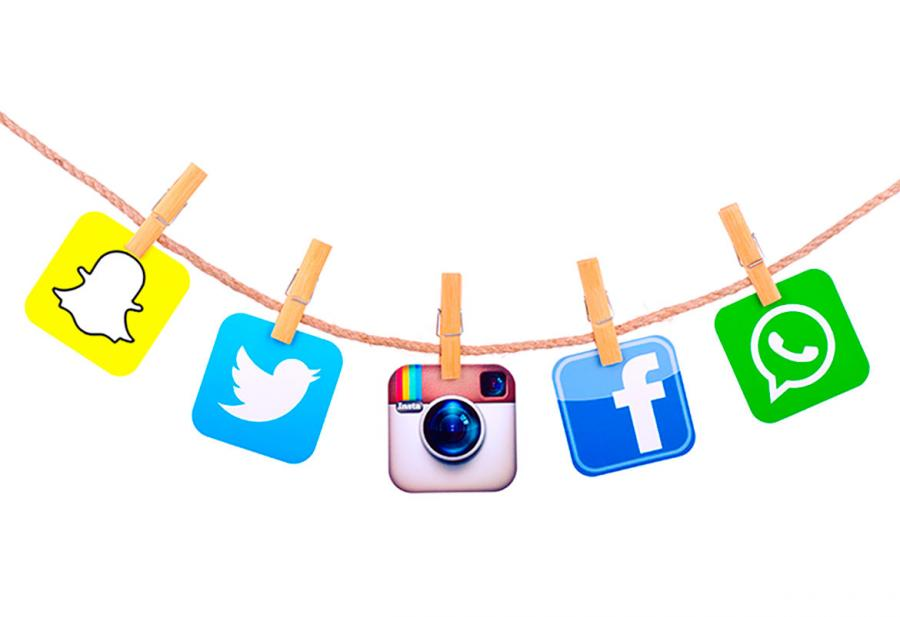

Redes Sociales
Las Redes Sociales son estructuras formadas en Internet por personas u organizaciones que se conectan a partir de intereses o valores comunes. A través de ellas, se crean relaciones entre individuos o empresas de forma rápida, sin jerarquía o límites físicos.